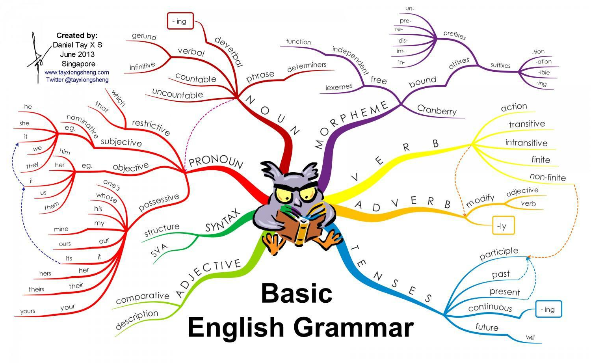

Syntax Analysis
Parser
Ahmad Yoosofan
Compiler course
University of Kashan
Checking Syntax
- I am student
- ⊠ I are student
- ⊠ You am student
- ⊠ They am student
- 342 + 261 * 5
- 45 * (23 + 332)
- ⊠ 23 * + 54
- ⊠ 2323 +
- ⊠ * 232
- ⊠ 2323 + 23 * (23 (23))
- ⊠ 234 * (45 * (23+3)
- We need more theory to simplify the task

Grammar
- Regular Expression Weakness
- Nested comments /* /* */ */
- Parenthesis and Braces () {} []
- State machine needs memory
- context-free grammar (CFG)
- BNF (Backus-Naur Form) notation
- checks a given source program
- creates the parse tree
- Otherwise gives the error messages
- → , λ , |
- S → aA
- S → b
- You can use
- -> instead of →



Simple Grammars
- I
- S → aSb
- S → b
- abb, aabbb, aaabbbb,
- II
- S → (S)
- S → a
- a, (a), ((a))
- III
- S → [A]
- A → aS
- A → λ
- [], [a[]], [a[a[]]]
- Writing grammar is harder than finding sentences of a grammar
- 87
- 78968 + (3334+43)
- 78968 * (3334+43)
- 78968 * (334+43)
- 78968 * ((334+43) * 4)
- 78968 * ((334+43)* 4)
- (23 + 45) + 45
- (23 + 45) + (45 * 443)
- 2 * ((23 + 45) + (45 * 443))
Grammar of simpler calculator
- It has just +, *, (, )
- There is no priority
- No unary operator (+)
- Use paranthesis for more that one operator
- (2+3)+4
- 2+(4+3)
- (2+(4+3))+5
- (2*(4*3))*5
- Terminals
- INT (for simplicity we use token.type: i)
- (i+i)+i
- i+(i+i)
- (i+(i+i))+i
- (i*(i*i))*i
- {'+', '*'}
- {'(', ')'}
- No need for naming operators, just using the symbol
- Use recursion
- Start Symbol (S)
- S → A + A
- S → A * A
- S → A
- A → (S)
- A → i
- Derivation Tree
Derivation Tree(I)
- S → A + A
- S → A * A
- S → A
- A → (S)
- A → i
- 43 + 87
Left Most Derivation
- S ⇒ A + A ⇒
- i[43] + A ⇒
- i[43] + i[87]
Right Most Derivation
- S ⇒ A + A ⇒
- A + i[87] ⇒
- i[43] + i[87]
Derivation Tree(II)
- S → A + A
- S → A * A
- S → A
- A → (S)
- A → i
- (32 * 5)
Left Most Derivation
- S ⇒ A ⇒
- (S) ⇒
- (A * A) ⇒
- (i[32] * A) ⇒
- (i[32] * i[5])
Right Most Derivation
- S ⇒ A ⇒
- (S) ⇒
- ( A * A ) ⇒
- ( A * i[5] ) ⇒
- ( i[32] * i[5] )
Derivation Tree(III)
- S → A + A | A * A | A
- A → (S) | i
- 3 * (32 + 5)
Left Most Derivation
- S ⇒ A * A ⇒
- i[3] * A ⇒
- i[3] * (S) ⇒
- i[3] * ( A + A ) ⇒
- i[3] * ( i[32] + A ) ⇒
- i[3] * ( i[32] + i[5] )
Right Most Derivation
- S ⇒ A * A ⇒
- A * ( S ) ⇒
- A * ( A + A ) ⇒
- A * ( A + i[5] ) ⇒
- A * ( i[32] + i[5] ) ⇒
- i[3] * ( i[32] + i[5] )

More Languages
- Adding Priority
- Adding Minus and Divide
- Adding Variables (Assignment)
- A simple Programming Language (if and while)